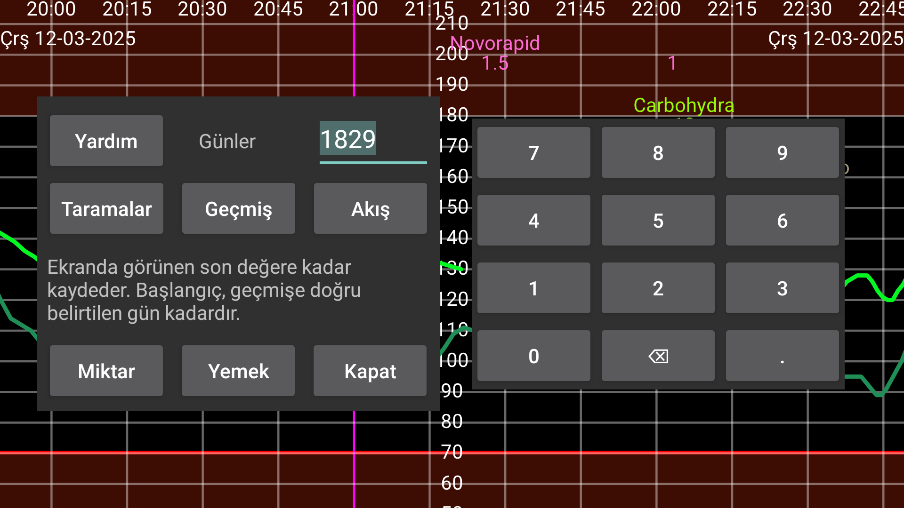

Verileri Juggluco'dan bir dosyaya aktarın.
Yemekler html'de kaydedilir. Diğer tüm veriler .tsv (Tab-separated values)'de kaydedilir. Bu, LibreOffice Calc, Microsoft Excel, Mathematica veya R gibi programlara yüklenebilir. Öğeleri ayırmak için virgül yerine sekmelerin kullanıldığı bir tür .csv'dir. UTF-8 kodlaması kullanılır.
Sütunların anlamları şu adreste bulunabilir: https://www.juggluco.nl/Juggluco/webserver.html
Günler: Juggluco 7.1.0'dan başlayarak, kaydedilecek gün sayısını seçebilirsiniz. Bitiş tarihi ekranın sağ sınırıdır. Bu nedenle, Juggluco'da geçmiş verileri görüntülerseniz, yalnızca eski veriler dışa aktarılır (Sol Orta Menü > İstatistikler)
Juggluco 7.1.0'dan başlayarak, bu verileri Juggluco'daki web sunucusu üzerinden almak da mümkündür. (Sol Menü > Ayarlar > Veri değişimi > Web sunucusu)
Bakınız: https://www.juggluco.nl/Juggluco/webserver.html